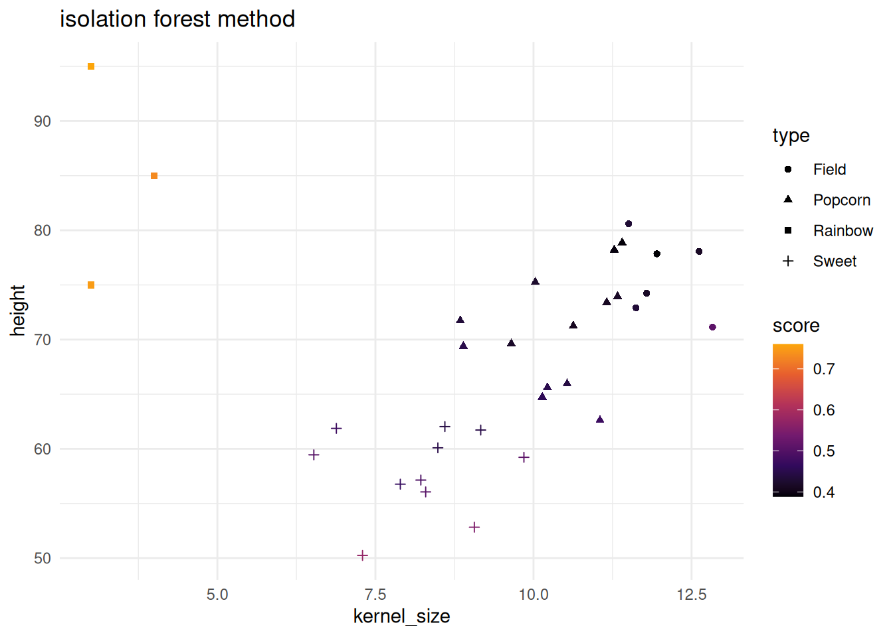
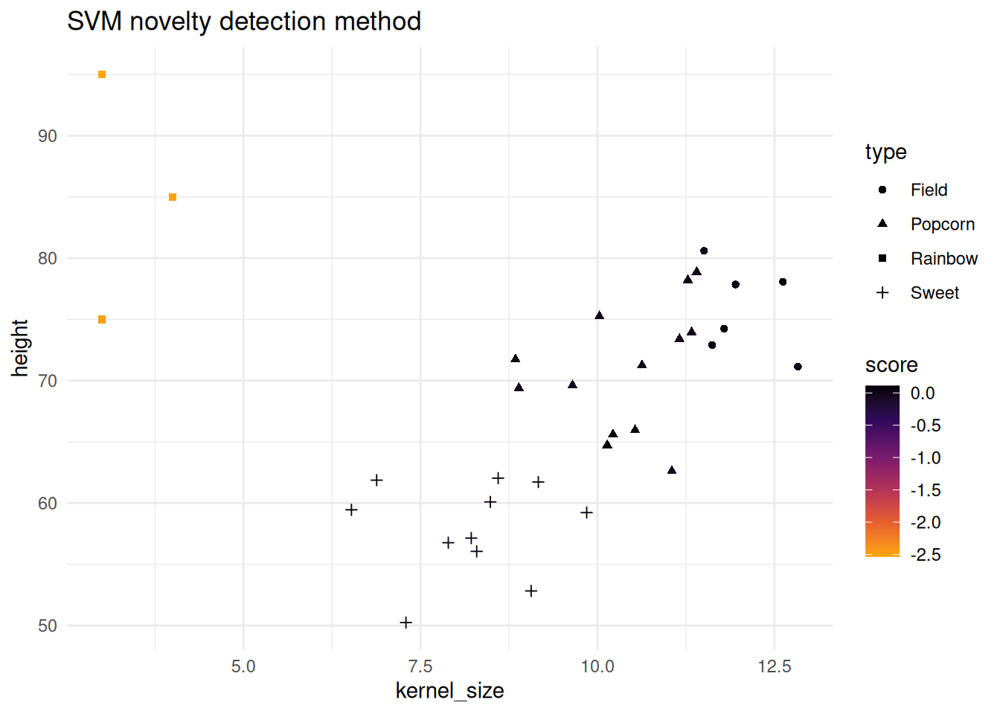
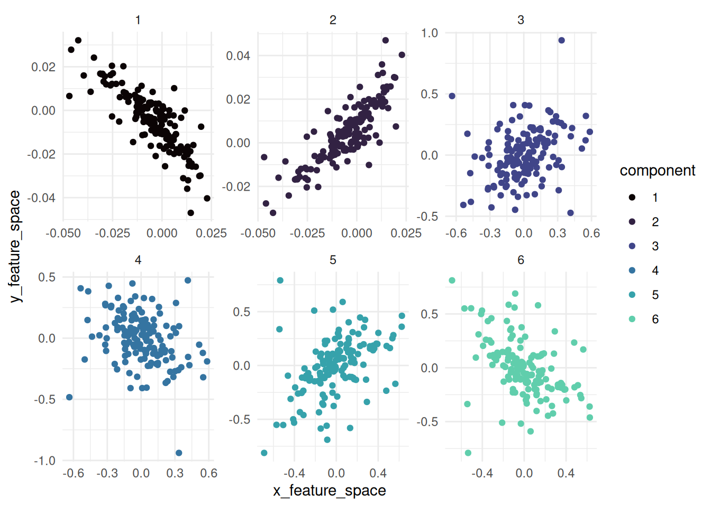

options(repos = c(CRAN = "https://cloud.r-project.org"))
install.packages("devtools")
devtools::install_github("tidymodels/applicable@develop")
#>
#> ── R CMD build ─────────────────────────────────────────────────────────────────
#> * checking for file ‘/tmp/RtmpXLmdj7/remotes246e464a3013/tidymodels-applicable-713aa0e/DESCRIPTION’ ... OK
#> * preparing ‘applicable’:
#> * checking DESCRIPTION meta-information ... OK
#> * checking for LF line-endings in source and make files and shell scripts
#> * checking for empty or unneeded directories
#> * building ‘applicable_0.1.1.tar.gz’
devtools::install_cran("isotree")
library(applicable)
library(ggplot2)
library(kernlab)
library(maize)
library(dplyr)
# heldout novel/anomaly type
corn_glass_gem <- data.frame(
height = c(85, 75, 95),
kernel_size = c(4., 3., 3),
type = c("Rainbow")
)
set.seed(31415)
corn_train <- corn_data |> dplyr::sample_frac(.90)
corn_test <- corn_data |> dplyr::anti_join(corn_train)
# add the novel type to the test data
corn_test <- corn_test |> dplyr::bind_rows(corn_glass_gem)glass-gem
{maize} for novelty detection
An extension of {applicable}:
“There are times when a model’s prediction should be taken with some skepticism. For example, if a new data point is substantially different from the training set, its predicted value may be suspect. In chemistry, it is not uncommon to create an “applicability domain” model that measures the amount of potential extrapolation new samples have from the training set. applicable contains different methods to measure how much a new data point is an extrapolation from the original data (if at all).”
Within {applicable}, there lies an isolation forest technique for anomaly detection. SVMs are also known for novelty detection and outlier selection.
Below both the isolation forest and one-SVC methods are shown. Note that the corn testing data has a new type added to it. “Rainbow” corn has been added and differs from the other three corn types. Below will showcase how both methods pick up on the new type.
isolation forest score method
The isolation forest method is based on isotree and is the base code used for the SVM method shown in the next section.
if_mod <- apd_isolation(corn_train |> dplyr::select(-type), ntrees = 10, nthreads = 1)
if_mod
#> Applicability domain via isolation forests
#>
#> Isolation Forest model
#> Consisting of 10 trees
#> Numeric columns: 2
isolation_scores <- score(if_mod, corn_test |> dplyr::select(-type))
head(isolation_scores)
#> # A tibble: 6 × 2
#> score score_pctl
#> <dbl> <dbl>
#> 1 0.502 82.6
#> 2 0.572 94.7
#> 3 0.447 55.0
#> 4 0.475 72.4
#> 5 0.466 68.2
#> 6 0.504 83.3
corn_test |>
bind_cols(isolation_scores) |>
ggplot() +
geom_point(aes(x = kernel_size, y = height, color = score, shape = type)) +
theme_minimal() +
scale_color_viridis_c(option = "B", end = .8) +
labs(title = "isolation forest method")
SVM novelty detection score method
This implementation is based on one-class-svc (novelty) detection method found in kernlab.
svm_mod <- apd_svm_novel_detection(corn_train |> dplyr::select(-type), kernel = "rbfdot", nu = .1)
svm_mod
#> Applicability domain via SVMs
#>
#> Support Vector Machine object of class "ksvm"
#>
#> SV type: one-svc (novelty detection)
#> parameter : nu = 0.1
#>
#> Gaussian Radial Basis kernel function.
#> Hyperparameter : sigma = 1.63116623323711
#>
#> Number of Support Vectors : 49
#>
#> Objective Function Value : 32.7176
#> Training error : 0.12963
novel_scores <- score(svm_mod, corn_test |> dplyr::select(-type))
head(novel_scores)
#> # A tibble: 6 × 2
#> score score_pctl
#> <dbl> <dbl>
#> 1 0.0849 84.1
#> 2 0.0471 68.8
#> 3 -0.00638 5.81
#> 4 0.0378 64.1
#> 5 0.00298 28.8
#> 6 0.0271 57.4
corn_test |>
bind_cols(novel_scores) |>
ggplot() +
geom_point(aes(x = kernel_size, y = height, color = score, shape = type)) +
theme_minimal() +
scale_color_viridis_c(option = "B", end = .8, direction = -1) +
labs(title = "SVM novelty detection method")
{maize} for kernel canonical correlation analysis
Based on the tidymodels’ {corrr} package: “corrr is a package for exploring correlations in R. It focuses on creating and working with data frames of correlations (instead of matrices) that can be easily explored via corrr functions or by leveraging tools like those in the tidyverse.”
{maize} aims to do a similar approach but for kernlab’s kcca function. This method is an non-linear extension of canonical correlation analysis and differs from CCA. Instead of finding linear combinations of variables that maximize correlation between two sets, KCCA maps data to a high-dimensional feature space using a kernel function and then applies CCA in that space.
kernel canonical correlation analysis
Kernel Canonical Correlation Analysis (KCCA) is a non-linear extension of CCA and will handle comparisons between two variables or datasets, (x, y).
The analysis workflow is shown below:
corn_set_one <- corn_data |> dplyr::sample_frac(.50)
corn_set_two <- corn_data |> dplyr::anti_join(corn_set_one)
#> Joining with `by = join_by(height, kernel_size, type)`
maize_kcca <-
kcca_correlate(x = corn_set_one,
y = corn_set_two,
num_comp = 6)
maize_kcca |>
str()
#> kcor_df [900 × 5] (S3: kcor_df/tbl_df/tbl/data.frame)
#> $ component : num [1:900] 1 1 1 1 1 1 1 1 1 1 ...
#> $ canonical_correlation: num [1:900] 0.992 0.992 0.992 0.992 0.992 ...
#> $ sample : int [1:900] 1 2 3 4 5 6 7 8 9 10 ...
#> $ x_feature_space : num [1:900] -0.0057 -0.01295 0.00951 -0.00222 0.00508 ...
#> $ y_feature_space : num [1:900] -0.003173 -0.000951 -0.016546 -0.008046 -0.016327 ...kernel canonical correlations:
visualizing the feature space of the KCCA feature space:
maize_kcca |> autoplot()